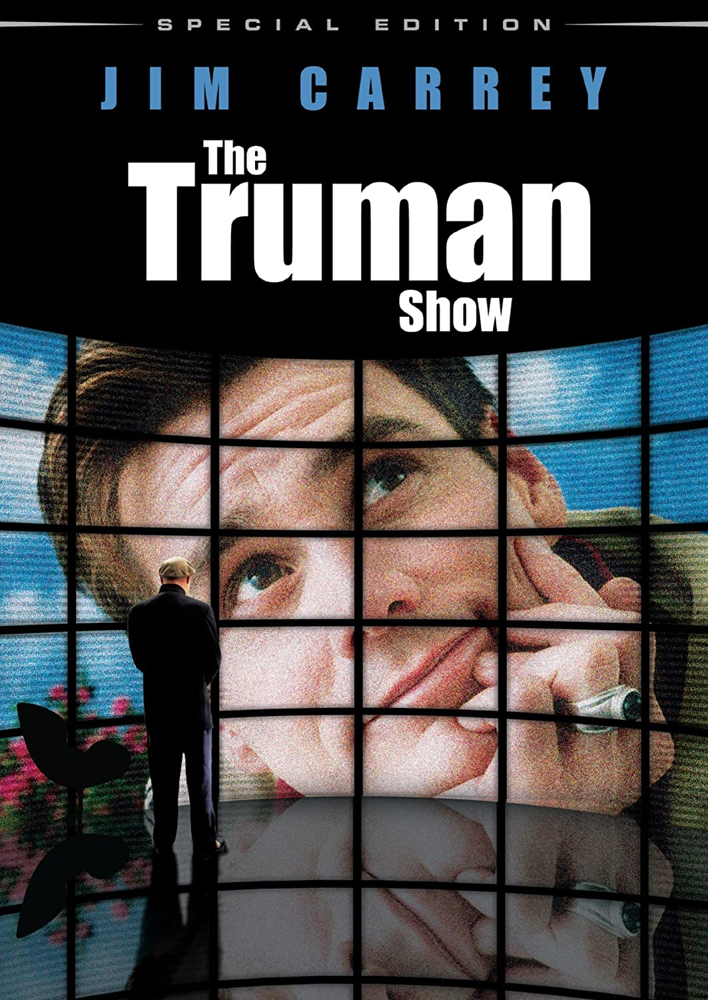

The Truman Show
An insurance salesman discovers his whole life is actually a reality
TV show.
The Truman Show
is a 1998 American psychological comedy-drama film
directed by Peter Weir, produced by Scott Rudin, Andrew Niccol,
Edward S. Feldman, and Adam Schroeder, and written by Niccol. The
film stars Jim Carrey as Truman Burbank, a man who grew up living an
ordinary life that—unbeknownst to him—takes place on a large set
populated by actors for a television show about him. Eventually, he
discovers the truth and decides to escape. Additional roles are
performed by Laura Linney, Noah Emmerich, Natascha McElhone, Holland
Taylor, Ed Harris, Paul Giamatti and Brian Delate.

Yes Man
A man challenges himself to say "yes" to everything.
Yes Man
is a 2008 comedy film directed by Peyton Reed, written by
Nicholas Stoller, Jarrad Paul, and Andrew Mogel and starring Jim
Carrey and co-starring Zooey Deschanel. The film is based loosely on
the 2005 memoir of the same name by humorist Danny Wallace, who also
makes a cameo appearance in the film.

Eternal Sunshine of the Spotless Mind
When their relationship turns sour, a couple undergoes a medical
procedure to have each other erased from their memories.
Eternal Sunshine of the Spotless Mind
is a 2004 American comedy-drama film written by Charlie Kaufman and
directed by Michel Gondry. It follows an estranged couple who have
erased each other from their memories. Pierre Bismuth created the
story with Kaufman and Gondry. The ensemble cast includes Jim Carrey,
Kate Winslet, Kirsten Dunst, Mark Ruffalo, Elijah Wood, and Tom
Wilkinson. The title of the film is a quotation from the 1717 poem
Eloisa to Abelard by Alexander Pope.
The film uses elements of psychological thriller, science fiction and
a nonlinear narrative to explore the nature of memory and romantic
love